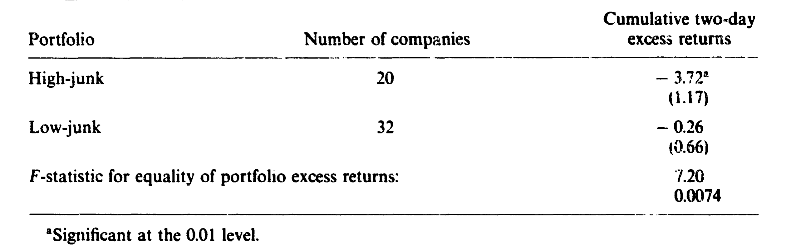
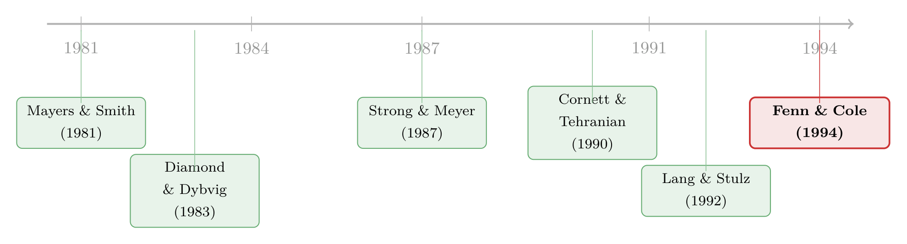

保单持有人会用脚投票——一场寿险业的「无声挤兑」如何写进了别人的股价
本文读的是 Fenn & Cole (1994, Journal of Financial Economics)：1990 年 First Executive 和 Travelers 先后宣布投资组合出问题，整个寿险板块的股价跟着下跌——而这场传染并非「人人自危」的盲目恐慌，它精准地只砸向那些既持有问题资产、又靠可流动负债（GIC）融资的公司。换句话说，市场早就替我们算好了：哪家公司的保单持有人会「用脚投票」，哪家公司的股价就该先跌。
1 一个反常识的开场
先讲一个让人摸不着头脑的事实。
1990 年 1 月，全美第十六大寿险控股公司 First Executive 宣布，要把它的债券组合减记 $515 million。消息一出，它自己的股价当天暴跌 42%，第二天再跌 15%。同年 10 月，第七大寿险公司 Travelers 宣布为商业地产组合的潜在损失计提 $650 million 准备金，股价当天跌 21%，随后两天又跌 14%。
这两家公司自己跌得惨，似乎不难理解——毕竟是它们出了事。可真正奇怪的是：那些跟这两家公司八竿子打不着的其他寿险公司，股价也跟着一起跌了。
为什么说这件事「反常」？作者一上来就摆出了两层困惑。
首先，如果市场是半强式有效的，那么一家公司资产的市场价值本就是公开信息，市场理应对资产账面价值的变动无动于衷。更何况，这两家公司只是在控股公司层面减记，其保险子公司按法定会计准则报出的财务数字根本没动。换句话说，这则公告在「信息」意义上，本不该掀起这么大的波澜。
接着，一个更尖锐的矛盾是：已有文献的结论恰恰相反。Strong 和 Meyer (1987) 发现，宣布资产减记往往伴随正的超额收益；Thakor (1987) 给出的解释是，减记其实释放了利好——它意味着管理层愿意直面问题。银行业的研究（Musumeci and Sinkey (1990)、Madura and McDaniel (1989)）也佐证：增提贷款损失准备金时，银行股价反而上涨。
于是问题就尖锐起来了：是什么因素，强到既能压过 First Executive 和 Travelers 自身的「利好信号」，又能解释别人家股价的下跌——而信号理论对后者是完全沉默的？
这正是全文要回答的那一个核心问题。
2 四种假说，与那个关键的「负债」维度
要解释「传染」，得先把它拆开。作者把寿险公司股价对资产质量公告的反应，干净地切成四种互斥假说：
- 无关假说（irrelevance）：公告没有任何新信息，也不改变保单持有人的行为，股价不该有反应。
- 资产信息假说（asset-information）：公告泄露了关于寿险业资产质量的坏消息，于是股价按各家问题资产的持有量下跌。
- 保单持有人响应假说（policyholder-response）：公告改变了保单持有人使用公开信息评估信用风险的方式，于是股价只对那些「既有问题资产敞口、又提供可流动负债」的公司下跌。
- 挤兑假说（bank-run）：公告动摇了对所有寿险公司的信心，于是股价不分资产负债结构、一律下跌。
四种假说里，前两种谈的是公告的「信息含量」，后两种谈的是公告如何改变保单持有人的行为。作者押注的是第三种——保单持有人响应假说。它的精妙之处，在于引入了一个常被忽略的维度：负债的流动性。
这里要交代一点 1980 年代的行业背景。那十年里，寿险产品悄悄地从「保险合约」滑向了「投资合约」。最典型的是 保证投资合约 (guaranteed investment contract, GIC)——一种在固定期限内支付固定回报的养老金投资合约，平均期限约四年，因此每年大约有 25% 的 GIC 到期续约。这种债务化的负债，比传统寿险产品流动性高得多。结果是：从 1980 到 1990，寿险准备金占总准备金的比例从 51% 降到 29%，而年金与养老金准备金从 46% 升到 68%。负债变「软」了，公司也就更暴露于 脱媒 (disintermediation) 的风险之下。
但真正关键的一步在于：作者强调，保单持有人响应假说与有效市场假说毫不冲突。股东作为剩余索取人，对公司价值的边际变动敏感，而且只需边际股东知情，信息就会被打进所有股东持有的股价里；保单持有人作为优先索取人，监督的边际收益低得多，平时没有动力去打探。公告的作用，不是给股东送来新信息，而是提高了保单持有人收集信息的回报——它促使保单持有人去区分强弱公司，进而（在弱公司）触发逐步的赎回。股东早就预见到了这一层，于是提前在股价里定了价。
这就是全文的「核心」：传染不是恐慌，而是预期中的脱媒。它有指向、有结构——只朝着那些资产差、负债又跑得快的公司去。
3 识别策略：用一个两步法，把四种假说逐一「夹」出来
那么，怎么用数据把这四种假说区分开？作者设计了一套两步走的检验，思路相当干净。
先看数据。 样本来自 Meakin 在《National Underwriter》上的寿险股票名单，结合 Best's、NAIC 数据库筛选，最终保留 54 家上市寿险公司（含 First Executive 和 Travelers），其寿险子公司合计持有 $376 billion 资产，约占全行业 26%；其中 24 家在 NYSE、30 家在场外交易。日度股票收益来自 CRSP，资产负债表数据来自 NAIC。检验时把 First Executive 和 Travelers 本身剔除，只看「别人」，于是样本是 52 家。
第一步：分组比超额收益。 作者借用 Cornett and Tehranian (1990) 的 多元回归模型 (multivariate regression model)，用事件窗口虚拟变量的系数来度量超额收益。对每家公司（或组合）估计一个双因子市场模型，用 1989 年 1 月 2 日到 1990 年 12 月 31 日两年、共 505 天的日度数据：
$$R_{it} = b_0 + b_1 R_{NYSE,t} + b_2 R_{TBOND,t} + b_3 D_{FE} + b_4 D_{TR} + b_5 D_{Post\text{-}FE} + b_6 R_{NYSE,t} D_{Post\text{-}FE} + b_7 R_{TBOND,t} D_{Post\text{-}FE} + b_8 D_{Post\text{-}TR} + b_9 R_{NYSE,t} D_{Post\text{-}TR} + b_{10} R_{TBOND,t} D_{Post\text{-}TR}$$
这里 \(R_{NYSE,t}\) 是等权 NYSE 市场收益，\(R_{TBOND,t}\) 是十年期国债收益（寿险公司资产久期长，对利率敏感，这是双因子里那「第二个因子」的来由）。\(D_{FE}\)、\(D_{TR}\) 是 First Executive、Travelers 两个公告的两日事件窗口虚拟变量，系数 \(b_3\)、\(b_4\) 就是两个事件窗口里的平均日度超额收益。
把 52 家公司按风险资产集中度分成两组（First Executive 事件看垃圾债、Travelers 事件看商业按揭），用 似无关回归 (seemingly unrelated regression, SUR) 同时估计，就能检验「高风险组」和「低风险组」的超额收益是否相等。这一步能把四种假说先粗筛一遍：
- 两组都不显著 → 无关假说；
- 两组都显著为负、且幅度相同 → 挤兑假说；
- 只有高风险组显著为负 → 资产信息 或 保单持有人响应（这一步还分不开这两个）。
第二步：用交互项把最后两个对手分开。 这是整篇论文识别策略的灵魂。作者把第一步估出的每家公司超额收益 \(b_{3i}\)、\(b_{4i}\)，回归到资产负债表变量上。以 First Executive 事件为例：
其中 \(Junk_i\) 是垃圾债占资产比、\(GIC_i\) 是 GIC 占资产比、\(Capital_i\) 是 法定资本 (statutory capital) 占资产比。Travelers 事件对应的方程把 \(Junk\) 换成 \(Mortgage\)（商业按揭占比）：
$$b_{4i} = d_0 + d_1\, Mortgage_i + d_2\, Mortgage_i \times GIC_i + d_3\, Mortgage_i \times Capital_i$$
这套设计的关键，全在交互项的符号上。两种假说在这里给出截然不同的预言：
- 保单持有人响应假说预测：GIC 交互项为负（\(c_2 < 0,\ d_2 < 0\)）——负债越能跑，跌得越狠；资本交互项为正（\(c_3 > 0,\ d_3 > 0\)）——资本越厚，越扛得住。
- 资产信息假说预测：所有交互项都等于零（\(c_2 = c_3 = d_2 = d_3 = 0\)），只有风险资产本身的系数为负（\(c_1 < 0,\ d_1 < 0\)）。
也就是说，交互项是否显著，就是裁决这场对决的判据。 标准误用 White (1980) 的异方差稳健估计。
4 主要结果：负债的流动性，才是那根真正的导火索
先看 First Executive 的第一步。高垃圾债组（20 家公司，垃圾债占一般账户资产超过行业均值 7.3%，组内均值约 17%）的累计两日超额收益为 −3.72%，在 0.01 水平显著；低垃圾债组（32 家，组内均值约 3%）则约为 −0.26%，几乎为零。两组相等的原假设被 F 检验拒绝（F = 7.20，p = 0.0074）。

Table 1
这一步已经枪毙了两个对手：低风险组不显著，所以不是「挤兑」（否则该一起跌）；高风险组显著为负，所以也不是「无关」。剩下资产信息和保单持有人响应两家，进第二步对质。
第二步的横截面回归才真正见分晓。只放垃圾债一项时，\(Junk\) 系数为 −11.8（se 3.17），0.01 水平显著，调整 \(R^2 = 0.30\)。它的解读是：垃圾债占资产比每升高一个百分点，事件窗口内股价每天多跌约 11.8 个基点。
但加入交互项后，故事完整了：\(Junk\) 仍显著（系数 −13.8），而 \(Junk \times GIC = -135.7\)（se 60.7）、\(Junk \times Capital = 94.0\)（se 39.4），两个交互项都恰好是保单持有人响应假说预测的符号，且在 0.05 水平显著，调整 \(R^2\) 跳升到 0.45。翻译过来：在持有垃圾债的公司里，GIC 负债越多、资本越薄的，跌得越惨。资产信息假说要求这些交互项为零，被数据干脆利落地否决了。
Travelers 的商业按揭事件，给出了一个更耐人寻味的版本。第一步里，高按揭组（15 家，商业按揭超过行业均值 19.7%）累计两日超额收益 −4.44%（se 0.80），低按揭组 −0.61%（se 0.80），F 检验同样拒绝相等（F = 9.1，p = 0.0025）。可到了第二步，单看 \(Mortgage\) 时，系数只有 −5.2，连 0.10 水平都不显著（p = 0.11），调整 \(R^2\) 仅 0.05。
这正是反转所在：如果传染真的来自「资产坏消息」本身，按揭占比理应像垃圾债那样独立地把股价拉下来——可它没有。只有加入交互项后，\(Mortgage \times GIC = -23.7\)、\(Mortgage \times Capital = 26.6\)，符号都对，分别在 0.07 和 0.06 的 p 值上显著，两个交互项联合为零的假设在 0.05 水平被拒绝，调整 \(R^2\) 升到 0.14。作者还做了个直观的对照：一家资本充足率 7%、没有 GIC 的公司，按揭每多 1% 只多跌约 3 个基点；而一家同样 7% 资本、GIC 占到资产 30% 的公司，按揭每多 1% 要多跌约 16 个基点。
把两个事件合起来看，结论就立住了：资产质量本身解释不了全部传染，真正放大冲击的，是「问题资产 × 可流动负债」这个乘积。 风险敞口是干柴，GIC 负债才是那根火柴。
稳健性上，作者也补了两刀。一是按 Lang and Stulz (1992) 的提醒，担心传染只是 买卖价差跳动 (bid-ask bounce) 和做市商库存效应的假象——如果高风险/高 GIC 公司恰好股价偏低的话。于是把股价对数加进回归，系数接近零且不显著，排除了这一可能（关于「一起暴跌≠真传染」这件事本身怎么量，可参见《别再盯着相关系数了——用「一起暴跌」数出传染》）。二是查异常值：有家叫 ICH 的公司，在 First Executive 事件时持有后者 20% 的股权，它的下跌一部分是直接的股权关联。剔除 ICH 重估，结果不变。
5 文献脉络
把这篇论文放进谱系里看，它站在两条线的交叉口。
一条线是资产减记 / 损失准备金的信号含义。Strong and Meyer (1987) 发现减记伴随正收益，Thakor (1987) 给出「直面问题」的信号解释，银行业的 Musumeci and Sinkey (1990) 等也佐证准备金利好。Fenn 和 Cole 的出发点恰恰是这条线的「反例」——为什么这一次，减记带来的是大跌？

另一条线是金融机构的传染与挤兑。挤兑的经典模型来自 Diamond and Dybvig (1983)：储户因为「相信别人会先跑」而自我实现地挤兑，前提是他们无法识别哪家机构真出了问题。Park (1991)、Kaufman (1992) 沿着这条线讨论。而 Fenn 和 Cole 的贡献，正是用寿险业的数据说明：这一次不是 Diamond-Dybvig 式的盲目挤兑——因为公司层面的信息足够识别强弱，且保单不能无成本随时赎回。他们借 Mayers and Smith (1981) 关于「固定利率负债的监督回报很低」的洞见，把保单持有人的行为内生进来，给出了一个介于「纯信息」与「纯挤兑」之间的第三种机制。同期 Lang and Stulz (1992) 关于行业内传染与竞争效应的工作，则为这类「同业溢出」研究提供了方法论的参照（关于贷款损失准备金如何在银行间传染，可对照《银行为什么不肯承认坏账？》）。
值得一提的是，这场危机里的 First Executive 后来成了一个独立的研究对象——它在 1991 年 4 月被监管接管，本博客也有专文复盘它如何被新闻「挤」死在谷底（《差一年就翻身：一家垃圾债保险公司，怎样被新闻「挤」死在谷底》）。而「保险公司持仓相似导致一起抛售」这条更现代的脉络，可参见《买在一起，卖也在一起：当保险公司的持仓「撞衫」》。
6 评论与延伸（Q&A + 研究方向）
(a) 几个可能的疑问
Q：保单持有人响应假说和挤兑假说，到底差在哪？听起来都是「人要把钱拿走」。
差在「识别能力」和「自我实现」。挤兑假说假设储户无法区分好坏机构，纯靠「别人会先跑」的信念集体出逃，所以会冲击所有公司。保单持有人响应假说则认为公开信息足以识别弱公司，赎回是有指向的、渐进的，只打击「资产差 + 负债软 + 资本薄」的公司。数据里低风险组不跌、交互项显著，正好支持后者而非前者。
Q：股价在公告日就跌了，可保单持有人真正赎回是后来的事——这不矛盾吗？
不矛盾，反而是全文最漂亮的地方。股东是剩余索取人、且只需边际股东知情，所以会提前把「未来会发生脱媒」这件事定价进股价；而保单持有人作为优先索取人，监督回报低，往往是被公告「唤醒」后才慢慢行动。股价的即时下跌，定的就是这份预期中的赎回。事后看，First Executive 1990 全年退保高企、1991 年 4 月被接管，预期兑现了。
Q：Travelers 事件里 Mortgage 单项不显著，会不会说明识别其实很弱？
恰恰相反，这个「不显著」是支持作者的证据。如果传染来自资产坏消息本身，按揭占比应当像垃圾债一样独立压低股价；它没有，而只有
Mortgage × GIC、Mortgage × Capital交互项显著——说明驱动力不是资产，而是「资产 × 负债流动性」。当然，商业按揭估值在 1990 年那个交易稀少的市场里确实更难、信息更可能是新的，这也是作者承认的一个微妙之处。
Q：会不会是「垃圾债公司本来就该跌」，跟保单持有人没关系？
作者用资本交互项堵了这条路。如果纯是资产质量，资本厚薄不该改变同样垃圾债敞口的股价反应；但
Junk × Capital显著为正（94.0），说明资本厚的公司同样的敞口跌得更轻。资本之所以重要，正是因为监管者用它判定偿付能力，从而影响保单持有人的赎回决策——这是「响应」机制的直接印记。
Q：样本只有 52 家、两个事件，统计上靠得住吗？
这是诚实的软肋。两个事件本质上是两次「自然实验」，横截面只有 52 个观测，交互项的 t 值并不算高（Travelers 的交互项只在 0.10 水平显著）。作者也报告了若干学生化残差超过 2.0 的影响点。好在两个独立事件给出方向一致的结论，且剔除 ICH 后稳健，这让结果更可信一些，但样本量小仍意味着不能过度外推。
Q：这对今天还有什么用？
它给出的一般教训是：金融机构的脆弱性 = 资产风险 × 负债流动性，而非任一单项。这个「乘积」框架后来在银行（批发融资 + 风险资产）、债券基金（可赎回份额 + 流动性差的持仓）里反复出现。社交媒体时代的挤兑（参见《四天，一条推特，挤垮一家银行》）某种意义上是把「保单持有人响应」的反应速度按了快进键。
(b) 几个可能的研究问题与提案
1. 把「资产 × 负债流动性」框架搬到公司债基金的赎回脆弱性上。
【经济故事】Fenn-Cole 的乘积逻辑天然适用于今天的债券共同基金：持仓越不流动（如高收益公司债）、份额越可日度赎回，净值冲击就越容易触发火线赎回与抛售螺旋。 【可行性】高。数据有
CRSP基金库、Morningstar 持仓、TRACE 公司债成交。识别上可用流动性冲击（如 2020 年 3 月）做事件，把基金超额资金流出回归到「持仓流动性 × 份额可赎回度」的交互项上，复刻本文的两步法。
2. 寿险业的「负债流动性」差异，能否预测信用利差而非股价？
【经济故事】本文看的是股东反应；自然的延伸是债权人——GIC 占比高的寿险公司，其发行的债券或 CDS 利差是否在同业冲击时扩得更宽？ 【可行性】中。需要 NAIC 负债明细 + 寿险公司公开债 / CDS 报价，后者样本有限。识别可借同业坏消息事件，难点在于寿险公司发债不密集、CDS 覆盖稀疏。
3. 外资保单持有人 / 外资债权人是否「跑得更快」？
【经济故事】把「保单持有人响应」推广到外资持有人：信息劣势更大、对本地监管信号更敏感的外资，遇到资产质量公告时是否撤离更剧烈，从而放大传染？ 【可行性】中。可借鉴外资行为研究的思路（如《外资真是「蝗虫」吗？》），用持有人国籍 × 冲击的交互项识别；难点是保险 / 信用产品的持有人国籍数据稀缺。
4. 监管的「法定资本」披露，究竟是稳定器还是加速器？
【经济故事】本文里资本交互项为正，说明资本是缓冲；但若监管阈值高度透明，逼近阈值的公司可能反而触发更快的「理性出逃」。资本披露到底净效应如何，值得拆开。 【可行性】中。需要监管资本阈值变更的准自然实验（如 RBC 制度引入前后），用断点 / DiD 识别披露强度对赎回敏感度的影响。
7 参考文献
- Fenn, G.W., Cole, R.A. (1994). Announcements of asset-quality problems and contagion effects in the life insurance industry. Journal of Financial Economics 35(2), 181–198.
- Cornett, M.M., Tehranian, H. (1990). An examination of the impact of the Garn-St. Germain Depository Institutions Act of 1982 on commercial banks and savings and loans. Journal of Finance 45(1), 95–111.
- Diamond, D.W., Dybvig, P.H. (1983). Bank runs, deposit insurance, and liquidity. Journal of Political Economy 91(3), 401–419.
- Lang, L.H.P., Stulz, R.M. (1992). Contagion and competitive intra-industry effects of bankruptcy announcements. Journal of Financial Economics 32(1), 45–60.
- Mayers, D., Smith, C.W. (1981). Contractual provisions, organizational structure, and conflict control in insurance markets. Journal of Business 54(3), 407–434.
- Strong, J., Meyer, J. (1987). Asset writedowns: Managerial incentives and security returns. Journal of Finance 42(3), 643–661.
- White, H. (1980). A heteroskedasticity-consistent covariance matrix estimator and a direct test for heteroskedasticity. Econometrica 48(4), 817–838.